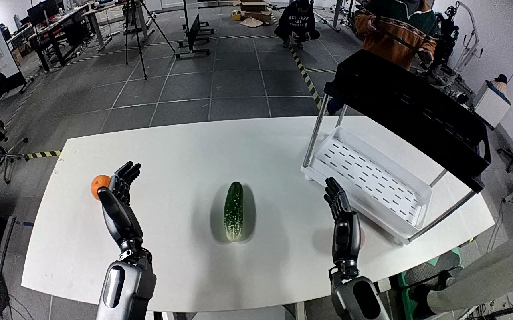

NVIDIA GR1 · 52
Video 52

Visual review action_review.json
{
"prompt_protocol": "humanoid_action_v1",
"prompt_provenance": "visually_authored_from_video_and_initial_frame",
"reviewed_contact_sheets": [
"sheet_001.jpg"
],
"inspected_frame_stride": 2,
"inspected_sampled_frame_count": 60,
"initial_scene": "Robot-forward camera looks down along both forearms at a white table. An orange is beside the open left hand, a cucumber-shaped green object is centered, and a two-tier shelf is on the right. The pink target beside the shelf is initially hidden behind the open right hand.",
"observed_sequence": [
{
"source_frame_start": 0,
"source_frame_end": 23,
"action": "Both hands are open over the table; the right hand is positioned beside the white bottom tray, occluding the pink target. Left hand stays beside the orange.",
"confidence": "high"
},
{
"source_frame_start": 24,
"source_frame_end": 47,
"action": "Right wrist turns and the hand moves around the pink round fruit on the tabletop, revealing it between thumb and fingers.",
"confidence": "high"
},
{
"source_frame_start": 48,
"source_frame_end": 75,
"action": "Right thumb and fingers close around the peach to establish the grasp. Left hand remains open and does not assist.",
"confidence": "high"
},
{
"source_frame_start": 76,
"source_frame_end": 103,
"action": "Right hand lifts the peach clear of the table and carries it toward and above the white bottom shelf tray.",
"confidence": "high"
},
{
"source_frame_start": 104,
"source_frame_end": 109,
"action": "Right hand opens over the bottom tray, releasing the peach downward onto its floor.",
"confidence": "high"
},
{
"source_frame_start": 110,
"source_frame_end": 119,
"action": "Peach remains in the white bottom tray with the right fingers spread above and beside it. There is no completed withdrawal; left hand stays open near the orange.",
"confidence": "high"
}
],
"arm_hand_roles": {
"right": "Active hand: grasps the pink peach, lifts it, transports it to the bottom shelf tray, and opens to release it. Ends open above the placed object.",
"left": "Inactive during this task: remains open near the orange, with slight pose drift but no grasp, support, transfer, or shelf contact.",
"coordination": "Single-handed manipulation; no hand-to-hand transfer or assistance from the left hand."
},
"anatomical_side_evidence": "Both forearms project forward from the bottom of this robot-forward view. The image-right hand has its thumb on the inward/image-left side, while the image-left hand has its thumb on the inward/image-right side. This bilateral hand anatomy and forearm orientation establish image-right as robot-relative right; the source right-hand annotation agrees.",
"evidence_frame_indices": [
0,
30,
44,
70,
94,
104,
108,
112,
119
],
"initial_frame_inspected_at_native_resolution": true,
"coverage": "Visually inspected all 60 sampled frames (every second frame, 0 through 118) in the single contact sheet, then native source PNG and eight transition/final images.",
"inspection_coverage": {
"all_contact_sheets_visually_viewed": true,
"sampled_frames": 60,
"source_frame_interval_inclusive": [
0,
119
],
"native_initial_png_viewed": true
},
"coordination": "No coordinated two-hand manipulation or person-object interaction occurs.",
"outcome": "Pink peach released into white bottom shelf tray; visible resting state retained at final frame.",
"selected_execution_status": "success",
"terminal_state": "Pink peach rests inside the white bottom tray after the right fingers open. The right hand remains open above/alongside it; left hand remains open beside the orange on the table.",
"uncertainties": [
"The pink target is occluded by the right hand in the initial PNG; its pink round fruit appearance is established as the right hand turns in the ensuing sequence. Exact fruit identity is not visually diagnostic; peach wording follows the consistent source annotation."
],
"annotation_discrepancies": [],
"video_id": "52",
"dataset": "NVIDIA_GR1_100",
"dedicated_review_agent": "review_gr1_52",
"review_source_video": "NVIDIA_GR1_100/52/original/original.mp4",
"source_frame_count": 120,
"source_fps": 20.0,
"native_detail_frames": [
30,
44,
70,
94,
104,
108,
112,
119
],
"world_model_prompt": "The robot closes its right hand around the pink peach on the right side of the table, lifts it, and carries it into the shelf's white bottom tray. It opens its fingers above the tray to release the peach, leaving it resting inside with the right hand still above it. Keep the camera fixed; preserve robot geometry, physically valid joint motion, and normal gripper opening and closing.",
"original_task_instruction": "Use the right hand to pick up pink peach from right side of white table to bottom level of the shelf.",
"selected_segment": {
"start_frame": 0,
"end_frame_exclusive": 120,
"reason": "Complete original single-task reference; no cropping or trimming requested."
},
"source_video_sha256": "afe5b50f35f9bcaa468076f5ac5b0b40a8cd82fb24b37a78a5b15985eabed5a5",
"review_completed_at": "2026-10-13T18:12:21.691104+00:00"
}